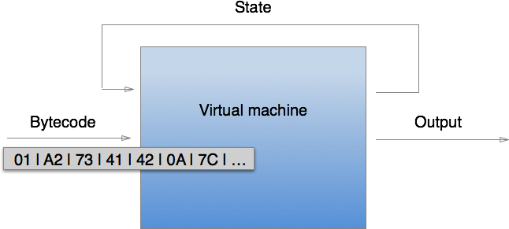
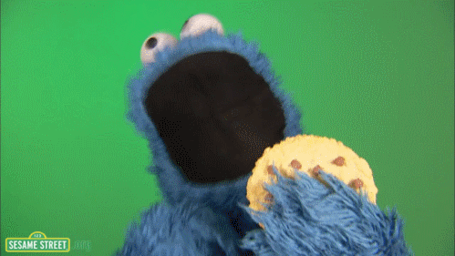

Go St Louis


Platform as a service hosting, git push, databases, VM everywhere, zero downtime redeployments
does not go down when Amazon's North Virginia DC goes down


what I do at VideoLAN
VLC handles most audio, video and streaming formats
handling multiple formats is dangerous. MP4 has a lot of flaws, but not the MKV demuxer
fuzzing
a good developer would avoid those issues But how can we fight the urge to write vulnerable code?
if not for the "embeddable", I would write some haskell

treating all valid or expected inputs as a formal language
and the respective input-handling routines as a recognizer for that language

The program is a machine data is its bytecode an exploit demonstrates that the input language is Turing complete
ex: ROP gadgets
weird machine
context-free or regular
the grammar can be context-free, but the behaviour (state machine) heavily context sensitive
Be conservative in what you do, be liberal in what you accept from others
worked great to ensure large adoption of some formats
yet...
postel's law is not robustness, it's fragility and complexity
whenever there's an ambiguity, developers will make choices
those choices may be wrong or not, but they're ambiguous

slide for TLS example
example: HTTP, large headers or cookies
length-value is context sensitive
Length-value is annoying, but essential for partial parsing
token delimited means you could buffer forever
Fixed size would be cool -> regular grammar
must support all those use cases anyway
formats already existing
- files and network
parsing manually VS generated code
parser combinators: middle ground

no null pointers, efficient memory management
emphasis on safety, zero cost abstractions
fix bugclasses, not bugs
also: traits, generics, pattern matching
No garbage collection
pub struct Slice<T> {
pub data: *const T,
pub len: usize,
}
let vec = vec![1, 2, 3];
let int_slice = &vec[1..]; slice = pointer + length since we have slices and lifetime, we could make zero copy parsers
Unsafe code can be written in any language

with lifetimes and slices,
a bet that we can make zero copy parsers in Rust
named!(parens<i64>, delimited!(
delimited!(
opt!(multispace),
char!("("),
opt!(multispace)
),
expr,
delimited!(
opt!(multispace),
char!(")"),
opt!(multispace)
)
)
); composition of functions
pub enum IResult<Input,Output,CustomError=u32> {
Done(Input,Output),
Error(Err<Input,CustomError>),
Incomplete(Needed)
} Done contains output and remaining input
IResult<&[u8], &[u8]>
IResult<&[u8], &str>
IResult<&str, MyStruct>accept any type, stay type safe
named!(rm< &str,Vec<&str> >,
re_capture!(r"([:alpha:]+)\s+((\d+).(\d+).(\d+))")
);
rm("nom 0.3.11 hello");
// => Done(" hello", vec!["nom 0.3.11",
// "nom", "0.3.11", "0", "3", "11"]));let input = vec![0b10101010, 0b11110000, 0b00110011];
tag_bits!( (&input[..], 0), u8, 3, 0b101)
// => Done((&sl[0..], 3), 5)named!(http_version, chain!(
tag!("HTTP/") ~
version: take_while1!(is_version),
|| version));version is just a slice of the input
| small.mp4 (375 kB) | bigbuckbunny.mp4 (5.3 MB) | |
|---|---|---|
| hammer | 32424 ns/iter | 26523 ns/iter |
| attoparsec | 1138 ns/iter (+/- 55.2) | 1124 ns/iter (+/- 62.3) |
| cereal | 189 ns/iter (+/- 9.9) | 193 ns/iter (+/- 12.4) |
| nom | 240 ns/iter (+/- 56) | 195 ns/iter (+/- 69) |
the benchmarks are available on github for reproduction
| 21kB | 104kB | |
|---|---|---|
| manual C | 62,451 ns/iter (+/- 1000 ns) | 300,000 ns/iter (+/- 16 ns) |
| nom | 48,420 ns/iter (+/- 2,662 ns) | 250,547 ns/iter (+/- 6,967 ns) |
| attoparsec | 241.5 μs/iter (+/-5.7 μs) | 1.836 ms/iter (+/- 137 μs) |
the benchmarks are available on github for reproduction
philosophy: make everything easier for the developer
It is alright that nom gets more complex if building stuff with nom gets easier
pub enum IResult<Input,Output,CustomError=u32> {
Done(Input,Output),
Error(Err<Input,CustomError>),
Incomplete(Needed)
}
pub enum Needed {
Unknown,
Size(usize)
}
named!(take_5, take(5));
let res = take_5(&"abcd"[..]);
// => Incomplete(Needed::Size(5))
pub enum ConsumerState<O,E=(),M=()> {
Done(O),
Error(E),
Continue(M)
}
[...]
let mut m = MemProducer::new(&b"abcdefghijklabcdabcd"[..], 8);
let mut s1 = StateConsumer {
state: Continue(Consume(0)),
parsing: Initial
};
let mut s2 = StrConsumer { state: Continue(Consume(0)) };
let mut a = ChainConsumer::new(&mut s1, &mut s2);
let res = m.apply(&mut a)); state machine protected via type system
actually, would be more interesting to handle errors at runtime
tooling is crucial, we need easy ways to debug parsers
slice.to_hex(8);ftyp header:
00000000 6d 70 34 32 00 00 00 00 mp42....
00000008 6d 70 34 32 69 73 6f 6d mp42isom
00000010 61 76 63 31 avc1named!(f, dbg_dmp!( tag!( "abcd" ) ) );
let a = &b"efghijkl"[..];
f(a);
// -> Error(Position(Tag,
// [101, 102, 103, 104, 105, 106, 107, 108]))
// at l.1 by ' tag ! ( "abcd" ) '
// -> 00000000 65 66 67 68 69 6a 6b 6c efghijklpub enum IResult<Input,Output,CustomError=u32> {
Done(Input,Output),
Error(Err<Input,CustomError>),
Incomplete(Needed)
}
pub enum Err<Input,CustomError=u32>{
Code( ErrorKind<CustomError> ),
Position( ErrorKind<CustomError>, Input ),
Node( ErrorKind<CustomError>,
Box<Err<Input,CustomError>> ),
NodePosition( ErrorKind<CustomError>, Input,
Box<Err<Input,CustomError>> )
}named!(err_test,
preceded!(tag!("efgh"), error!(42,
chain!(
tag!("ijkl") ~
res: error!(128, tag!("mnop")) ,
|| { res }
)
)
)
);
let err = err_test( &b"efghblah"[..] );
// -> Error( NodePosition(Custom(42),
// &b"efghblah"[..],
// Box::new(Position(Tag,
// &b"blah"[..]))
// )) cut operator. No backtracking, early return. Catch the returned error from child parser, wraps it
named!(err_test,
preceded!(tag!("efgh"), error!(42,
chain!(
tag!("ijkl") ~
res: error!(128, tag!("mnop")) ,
|| { res }
)
)
)
);
let err = err_test( &b"efghijklblah"[..]);
// -> Error(
// NodePosition(Custom(42),
// &b"ijklblah"[..],
// Box::new(NodePosition(Custom(128),
// &b"blah"[..],
// Box::new(Position(Tag,
// &b"blah"[..]))
// )))) we have a chain of errors, with corresponding positions in the input
what can we do with that?
use nom::util::error_to_list;
fn error_to_string(e: Err) -> &str {
let v:Vec<u32> = error_to_list(e);
match &v[..] {
[Custom(42), Tag] => "missing `ijkl` tag",
[Custom(42),
Custom(128), Tag] => "missing `mnop` tag after `ijkl`",
_ => "unrecognized error"
}
} pattern matching will break if the grammar changes
let mut err_map = HashMap::new();
add_error_pattern(
&mut err_map,
// generate error from known bad input
parse(&b"efghaaaa"[..]),
"missing `ijkl` tag"
);
if let Error(e) = parse(&b"efghblah"[..]) {
let msg = err_map.get(&error_to_list(e));
// -> "missing `ijkl` tag"
};
if let Error(e) = parse(&b"efghijklblah"[..]) {
let msg = err_map.get(&error_to_list(e))
// -> "missing `mnop` tag after `ijkl`"
}; Merr for Menhir parsers in OCaml
idea: generate error patterns from known bad inputs
named!(err_test, alt!(
tag!("abcd") |
error!(12, preceded!(tag!("efgh"),
error!(42, chain!(
tag!("ijk") ~
res: error!(128, tag!("mnop")) ,
|| { res }
))
))
));

there's a catch: nested parser errors, not necessarily contiguous ones
 HTTP and logs
HTTP and logs about 50 projects on github, more in private
dropbox started using months ago, when it was not very stable
summing up: it is fast, it is easy to embed, there are lots of tools to help the developer, people are using it
if you want some stickers...